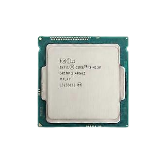
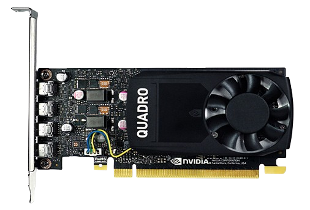
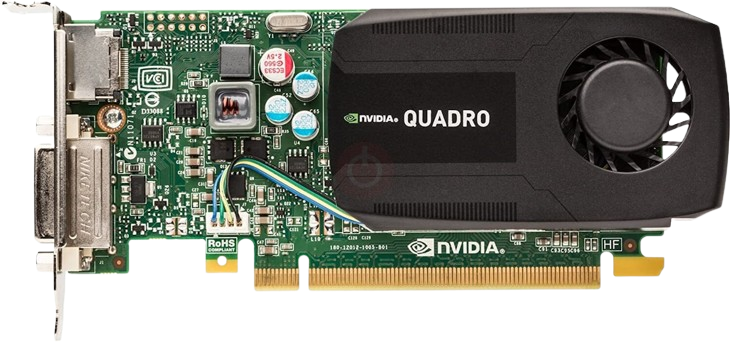
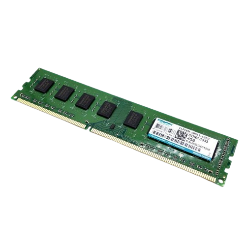
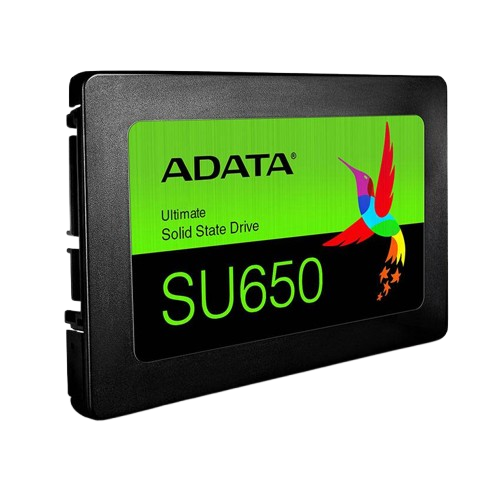

One of a kind Haswell CPU. Dual-core with hyper-threading clocked at 3.40 GHz. Standard for office PCs but I push it for gaming! Gets the job done for like everything.

A superior Pascal architecture workstation card equipped with 2GB GDDR5 VRAM. Basically a cut-down GTX 1050 but for workstations and et cetera. Fun fact: This GPU uses the same chip as the GTX 1050!

A dogwater Kepler architecture card absolutely loaded with 1GB of DDR3 VRAM. The former, and first graphics processing unit to ever approach this setup and to retire with its last game being played on was Minecraft with shaders.

An average and mediocre dual-channel memory setup. It's just RAM, there's literally nothing to put info on in here. I guess it survived a short circuit once?

A one of a kind SSD. This SSD was salvaged from a hard bricked ACER laptop, and put into my setup. Before this, I was running Windows on an HDD.. Yes I know.
